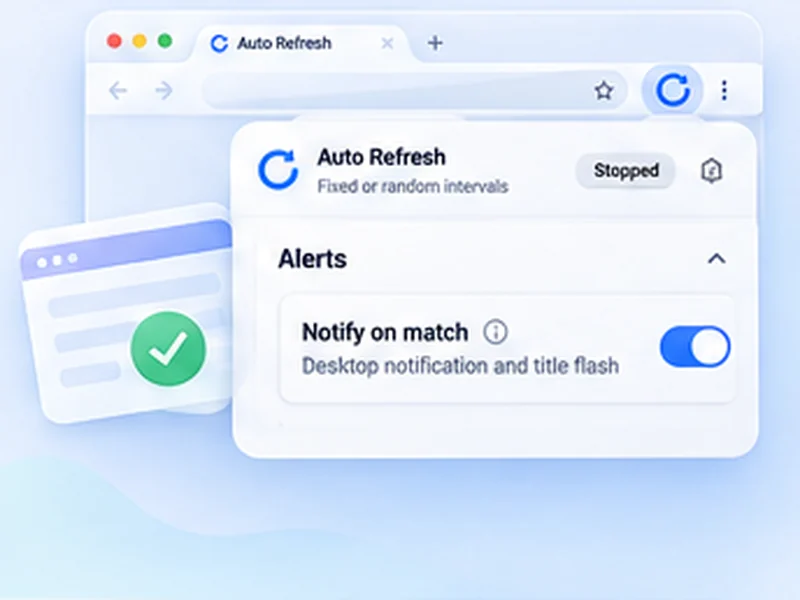

Be told when results are out.
Results day means hitting reload for hours. Let the page do it and alert you when the wording changes.

How results pages works
Results day means hitting reload for hours. Let the page do it and alert you when the wording changes.
Use Stop when content changes instead, with a selector for the results area if you can find one.
Quick setup
Open the results page and sign in if needed.
Choose Stop when text disappears and paste the 'not published' message.
Set Min 60 and Max 120, then press Start.
Stop reloading the results page by hand
On results day thousands of people refresh the same page. Set a watch on the not-yet-published message, pick a relaxed interval, and do something else. The notification arrives when the wording changes.
Be kind to a busy server
Results sites are overloaded exactly when you want them. A random interval of one to two minutes gets you the news almost as fast as hammering the page, and does not add to the problem. If the page fails to load, the next refresh simply tries again.
Private
Your candidate number and your results stay in your browser. Nothing is read by or sent to anyone else.
Use intervals that are reasonable for the site and only monitor pages you are allowed to access. The extension does not get around logins, queues, rate limits or other access restrictions.
A worked example: results at an unknown time
The portal says Results will be published shortly. Sign in, choose Stop when text disappears, paste that sentence, set Min 60 and Max 120 and press Start. Close nothing. When the results table replaces the sentence, a notification appears and the tab title flashes.
If the site keeps failing to load
On a busy day you may see error pages. An error page also makes the watched sentence disappear, so you could be alerted early. To avoid that, use Stop when text appears with a word that only shows once results are out, such as Grade or Result.
Other pages this suits
- University admission decisions.
- Lottery and draw results.
- Visa or immigration case decisions.
- Competition and tender outcomes.
At a glance
- One setup, then wait. Watch for the 'not yet published' text to disappear.
- Gentle on busy servers. A random 60 to 120 second range avoids adding to the rush.
- Private. Your roll number and results never leave your browser.
Questions, answered.
What if the page has no fixed message?
Use Stop when content changes, ideally with a selector for the results area.
Will it help if the site is down?
It keeps retrying for you, but it cannot make the site respond.
Can it work behind a student login?
Yes, in your signed-in tab.
Does it work for admissions and lottery results?
Yes. Any page whose text changes when a result is published.
The site is overloaded. Will this help?
It retries for you, but it cannot make an overloaded site respond faster. Longer intervals help everyone.
Let the page check itself.
Use the free extension for Chrome or Firefox.
Have a different use case in mind?
Share the browser task you would like to make easier. Your idea helps guide what gets built next.